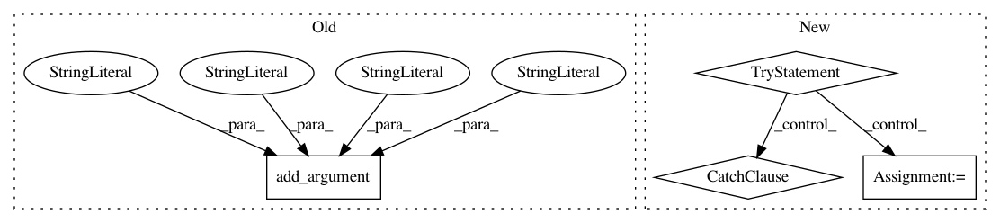

a651b0632f8f9ac9dbcff6c041d29e886ce54bd1,scripts/restruct.py,,main,#Any#,32
Before Change
parser.add_argument("--graph_out", nargs="?", type=str, default="",
help="HTML graphical output filename.")
// parser.add_argument("--abduction", action="store_true", default=False)
parser.add_argument("--abduction", nargs="?", type=str, default="no",
choices=["no", "naive", "spsa"],
help="Activate on-demand axiom injection (default: no axiom injection).")
parser.add_argument("--gold_trees", action="store_true", default=False)
args = parser.parse_args()
logging.basicConfig(level=logging.WARNING)
After Change
if os.path.exists(args.doc_labels):
with codecs.open(args.doc_labels, "r", "utf-8") as fin:
for line in fin:
try:
l = json.loads(line.strip())
except ValueError:
l = {"label" : line.strip()}
labels.append(l)
else:
print("File does not exist: {0}. Not using labels.".format(
args.doc_labels), file=sys.stderr)
In pattern: SUPERPATTERN
Frequency: 3
Non-data size: 4
Instances
Project Name: mynlp/ccg2lambda
Commit Name: a651b0632f8f9ac9dbcff6c041d29e886ce54bd1
Time: 2017-05-30
Author: pascual@nii.ac.jp
File Name: scripts/restruct.py
Class Name:
Method Name: main
Project Name: vatlab/SoS
Commit Name: a8a37622f0ef987ca83c9b401700d0fcbece9b70
Time: 2016-12-12
Author: ben.bog@gmail.com
File Name: sos/__main__.py
Class Name:
Method Name: get_convert_parser
Project Name: regel/loudml
Commit Name: 12de208521da9bf7be6bd9c25551693184c3bd46
Time: 2018-05-25
Author: vianney@redmintnetwork.fr
File Name: loudml/loudml/faker.py
Class Name:
Method Name: main